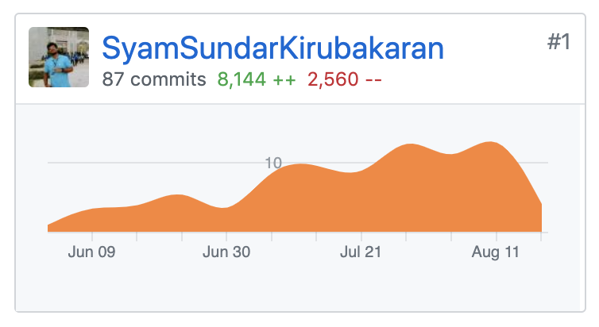
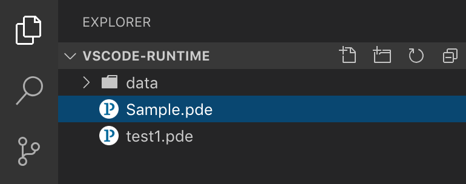

Final Summary:
Student : Syam Sundar K
Project : Processing Language Server : Processing
Mentor : Manindra K Moharana
Project Link : https://summerofcode.withgoogle.com/projects/#6526732054560768
Processing Language Server focuses on creating a Language Server Protocol (LSP)
implementation for Processing Programming Language. PDE is currently built using Java and using
custom components of the Swing Framework, which is ~ deprecated. The long term goal of
Processing is to replace this with a JS based IDE to bring in more contributors and to make
building UIs simple. While planning on building such IDE, LSP is of significant importance for
any language that the IDE relays on. Since Processing is the targeted Programming language, it’s
quite important to build a Language Server Protocol for the same. This shall act as a benchmark
for all the crucial activities of the IDE such as auto-completion, go-to-definition,
hover-insights and so on. LSP will also help in easy and seamless integration of the above
functionalities in any editor such as Atom, VScode, etc.
I started contibuting to Processing Foundation as a part of Google Summer of Code 2018, worked
on creating an ARCore Renderer for Processing Android and this year I'm super excited to be a
part
of Processing Foundation again to work on Processing Language Server as a part of Google Summer
of Code 2019.
This year was a lot different from the GSoC experience that I had last year. Last year, I worked
on Android Mode for Processing and Android is something I'm so comfortable working with. But
this
year I made up my mind to work on something outside Android, something out of my comfort zone.
Out of all the ideas in the GSoC 2019 idea list, Processing Language Server really caught my
eyes. So I started digging deep into Language Server Concepts and Paradigms. Literally 20
mins after exploring LSP, I felt, "this something that I can dedicate my summer for".
Feature List:
Following are the list of deliverables by the end of GSoC 2019
- Server Capabalities
- Auto Completion
- Diagnostics
- Hover for Insights
- Goto Definition
- Finding References
- Renaming / Refactoring
- VSCode Extension as a Language Client
Community Bonding:
Community bonding period was very helpful in getting me upto speed with coding. I had
very little / no previous experience working with nodejs, so had to spend a lot of time
learning the ins and outs of nodejs parallelly while exploring sample Language
Servers that use LSP.
Spent good amount of time figuring out how stuff works in node and reading a lot of code
before actually writing code. Also had to spend a good amount of time to get a strong
grasp of AST[Abstract Syntax Tree] because it's the form in which results of parsing are
obtained and most of the functional parts of the Language Server depends on Parsing and
Compilation.
Coding Period:
Initially, I started by creating a simple Language Server using nodejs and a
Language Client that actively listens to the server. This was done by
writing down a couple of config files and assigning ports through which they can communicate.
As Everyone knows, starting phase is always the hardest. Getting things in place, in
the initial stage of the project was the challenging part of the entire coding
period.
But in a bit more than a 2 of weeks I was able to pickup speed and was able to keep
up with the timeline promised in the Proposal.
I had to spend most of the time debugging in the initial stages of the coding period
since AST in most cases is asymmentic so had to find most of the possible out comes of it to
get a even more clear picture of the same. I would spend atleast an hour every day parsing
and debugging preprocessed processing-java code to infer the patterns in AST and the way in which the
parsed tokens are classified. Successive weeks were for implementing the entities of
the feature list.
- Autocompletion deals a lot with scoping of fields - had to classify
the
fields based on
scopes and also had to import Processing Specific methods from the jar files
to show as Autocompletion item.
- Diagnostics mostly dealt with compilation - since Processing is a
Domain
Specific Language built on top of Java. It's required to preprocess the
Processing Code into Java code before parsing it in the compilation phase,
after compilation phase we'll get Error Nodes and the line number in which
it has occured which will then be shown visually in the Language Client.
- Hover for Insights dealt with extracting information for every
Processing
specific keyword from the Processing Documentation and displaying those info
if the mouse pointer is hovered over any keyword for more than 2 secounds.
- Goto Definition dealt will recording all the class, variable and
method
declarations with it's associated line number in a Tuple and redirecting to
appropriate position in the workspace on cmd+click on any field.
- Finding References will point to all possible usages of the any
variable /
method / class name - this is done by encapsulating workspace field
positions with field names and displaying these encapsulated values on `Find References` invocation.
- Renaming / Refactoring is an extension of Finding References where in
renaming will modify
the encapsulated field name in the Container & Mapper.
Overall, I really had fun learning and working with Compilers, Parser and Language
Servers. Ofcourse, I ran into a number of road blocks and challenges along the way but
finding ways to solve them is what made coding period great.!
- Server Capabalities
- Auto Completion
- Diagnostics
- Hover for Insights
- Goto Definition
- Finding References
- Renaming / Refactoring
- VSCode Extension as a Language Client
Community Bonding:
Community bonding period was very helpful in getting me upto speed with coding. I had
very little / no previous experience working with nodejs, so had to spend a lot of time
learning the ins and outs of nodejs parallelly while exploring sample Language
Servers that use LSP.
Spent good amount of time figuring out how stuff works in node and reading a lot of code
before actually writing code. Also had to spend a good amount of time to get a strong
grasp of AST[Abstract Syntax Tree] because it's the form in which results of parsing are
obtained and most of the functional parts of the Language Server depends on Parsing and
Compilation.
Coding Period:
Initially, I started by creating a simple Language Server using nodejs and a
Language Client that actively listens to the server. This was done by
writing down a couple of config files and assigning ports through which they can communicate.
As Everyone knows, starting phase is always the hardest. Getting things in place, in
the initial stage of the project was the challenging part of the entire coding
period.
But in a bit more than a 2 of weeks I was able to pickup speed and was able to keep
up with the timeline promised in the Proposal.
I had to spend most of the time debugging in the initial stages of the coding period
since AST in most cases is asymmentic so had to find most of the possible out comes of it to
get a even more clear picture of the same. I would spend atleast an hour every day parsing
and debugging preprocessed processing-java code to infer the patterns in AST and the way in which the
parsed tokens are classified. Successive weeks were for implementing the entities of
the feature list.
- Autocompletion deals a lot with scoping of fields - had to classify
the
fields based on
scopes and also had to import Processing Specific methods from the jar files
to show as Autocompletion item.
- Diagnostics mostly dealt with compilation - since Processing is a
Domain
Specific Language built on top of Java. It's required to preprocess the
Processing Code into Java code before parsing it in the compilation phase,
after compilation phase we'll get Error Nodes and the line number in which
it has occured which will then be shown visually in the Language Client.
- Hover for Insights dealt with extracting information for every
Processing
specific keyword from the Processing Documentation and displaying those info
if the mouse pointer is hovered over any keyword for more than 2 secounds.
- Goto Definition dealt will recording all the class, variable and
method
declarations with it's associated line number in a Tuple and redirecting to
appropriate position in the workspace on cmd+click on any field.
- Finding References will point to all possible usages of the any
variable /
method / class name - this is done by encapsulating workspace field
positions with field names and displaying these encapsulated values on `Find References` invocation.
- Renaming / Refactoring is an extension of Finding References where in
renaming will modify
the encapsulated field name in the Container & Mapper.
Overall, I really had fun learning and working with Compilers, Parser and Language
Servers. Ofcourse, I ran into a number of road blocks and challenges along the way but
finding ways to solve them is what made coding period great.!
As Everyone knows, starting phase is always the hardest. Getting things in place, in the initial stage of the project was the challenging part of the entire coding period. But in a bit more than a 2 of weeks I was able to pickup speed and was able to keep up with the timeline promised in the Proposal.
I had to spend most of the time debugging in the initial stages of the coding period since AST in most cases is asymmentic so had to find most of the possible out comes of it to get a even more clear picture of the same. I would spend atleast an hour every day parsing and debugging preprocessed processing-java code to infer the patterns in AST and the way in which the parsed tokens are classified. Successive weeks were for implementing the entities of the feature list.
- Autocompletion deals a lot with scoping of fields - had to classify the fields based on scopes and also had to import Processing Specific methods from the jar files to show as Autocompletion item.
- Diagnostics mostly dealt with compilation - since Processing is a Domain Specific Language built on top of Java. It's required to preprocess the Processing Code into Java code before parsing it in the compilation phase, after compilation phase we'll get Error Nodes and the line number in which it has occured which will then be shown visually in the Language Client.
- Hover for Insights dealt with extracting information for every Processing specific keyword from the Processing Documentation and displaying those info if the mouse pointer is hovered over any keyword for more than 2 secounds.
- Goto Definition dealt will recording all the class, variable and method declarations with it's associated line number in a Tuple and redirecting to appropriate position in the workspace on cmd+click on any field.
- Finding References will point to all possible usages of the any variable / method / class name - this is done by encapsulating workspace field positions with field names and displaying these encapsulated values on `Find References` invocation.
- Renaming / Refactoring is an extension of Finding References where in renaming will modify the encapsulated field name in the Container & Mapper.

(a) Contribution Graph
Useful Links:
- Github Link: https://github.com/processing-language-server/LS4P
- Setup Documentation: https://github.com/processing-language-server/LS4P/blob/master/assets/SETUP.md
- New Client Documentation: https://github.com/processing-language-server/LS4P/blob/master/assets/NEWCLIENT.md

(b) LS4P Demo
Things I've learnt:
- Server side scripting with Nodejs
- Programming in TypeScript
- Drafting Design Doc
- Design decisions
- Prioritizing Tasks
Many thanks to Manindra for his outstanding mentorship. In addition to
helping me clear out all
the road blocks I had, He taught me how to be a better software enginner
over all. Things like
organizing workflows and pipelining tasks, drafting and following design
docs, classifying and
prioritizing tasks are some of the crutial things that I learnt from him.
It's been a great summer for me and looking forward to contribute more to
Processing in the future. That's all for GSoC'19. Thanks for
reading.!
- Server side scripting with Nodejs
- Programming in TypeScript
- Drafting Design Doc
- Design decisions
- Prioritizing Tasks